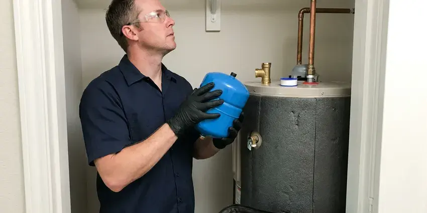

Gas Line Installation in Fullerton, CA
When you need new gas line installation for your Fullerton, CA home or business, trust FKM Plumbing. Our licensed plumbers handle everything from planning to final connection.
- Upfront Pricing
- Safety Focused
- Upfront Pricing
- Every Joint Pressure Tested

Get a Gas Line Sized Right and Installed to Code in Fullerton, CA.
Our licensed plumbers handle the BTU calculations, the install and the inspection from start to finish.
Gas Line Installation in Fullerton, CA for Indoor and Outdoor Appliances
FKM Plumbing installs gas piping for new appliances, kitchen remodels, home additions and backyard projects. We calculate total BTU load, measure pipe length and size each branch so every appliance gets the pressure it needs. Every new line is pressure tested and inspected before gas is turned on.
Our expertise includes:
- Outdoor kitchen, fire pit, pool heater and generator gas runs
- Propane to natural gas conversions
- BTU load calculations and meter capacity checks for added appliances

Additional Plumbing Installation Services in Fullerton, CA
We install water heaters, pumps, lines, and fixtures across Fullerton, CA with precision workmanship that meets every local code.


Customers
Why Choose FKM Plumbing for Gas Line Installation in Fullerton, CA?
Choosing the right professionals for gas line installation protects your property and supports the long-term reliability of your gas appliances.
- Fully Permitted, Every installation is permitted and inspected according to local codes.
- Southern California Code Compliant, All our gas line installations adhere to Southern California plumbing codes and safety standards, providing peace of mind.
- Sized Correctly, We calculate BTU demand and pipe length so every appliance runs at full output.
Citywide Coverage
Whether you are on natural gas service or a propane tank, we serve every part of Fullerton. We coordinate with your gas utility or propane supplier for meter upgrades and tank connections.
Experienced Team
The team has run gas for ranges, tankless water heaters, dryers, pool heaters and full outdoor kitchens. That variety means they can plan a system that handles your appliances today and future additions.
Safety-First Approach
We adhere to all local and state safety regulations for gas line work. Our process includes meticulous planning, careful execution and thorough inspections for a safe, compliant installation.
Trusted Certified Fullerton Plumbing Services Professionals
At FKM Plumbing, we take pride in providing certified plumbing services throughout Fullerton, CA. Backed by recognized industry credentials, our experienced plumbers combine technical skill with genuine customer care. Whether it is repair, installation, or maintenance, we follow strict safety and quality standards to deliver lasting results you can trust.
Call Us Now PHCC Plumbing Contractor Recognition
PHCC Plumbing Contractor Recognition Better Business Bureau (BBB) Accreditation
Better Business Bureau (BBB) Accreditation Angi Certified Pro
Angi Certified Pro ISO 9001 Quality Management Certification
ISO 9001 Quality Management CertificationSafe Gas Line Installation Services in Fullerton, CA
Commercial Gas Line Services in Fullerton, CA
FKM Plumbing offers full-service gas line installation for commercial properties throughout Fullerton, CA. Whether for new restaurant kitchens, industrial equipment or office heating systems, we handle complex commercial gas piping projects. We work closely with businesses to limit disruption and make sure all installations comply with commercial building codes and operational requirements, providing robust gas service.

CSST Gas Line Installation in Fullerton, CA
Corrugated stainless steel tubing offers flexibility and can be installed with fewer fittings, usually reducing installation time. Our team is certified in CSST installation, including the bonding and grounding code requires. CSST is a common choice for new gas lines or extensions because it routes easily and tolerates building movement, making it a viable option for many Fullerton, CA homes.
CSST Flexible Gas Piping in Fullerton, CA
Corrugated stainless steel tubing installs faster than black iron and routes easily through attics and finished walls with fewer joints. It is a good option for remodels and additions where opening walls is costly. Long dry spells are the norm in Southern California, and water restrictions shape choices like low-flow fixtures and smart irrigation controls. CSST must be bonded to the home's grounding system to reduce lightning damage risk. We use brands with fittings our plumbers are certified to install and follow the manufacturer's installation guide.
Outdoor Gas Line Installation in Fullerton
Enhance your outdoor living space with gas lines for fire pits, outdoor kitchens and pool heaters. FKM Plumbing is experienced in extending gas lines outdoors, using materials rated for local weather conditions. We install secure, buried lines where needed, protecting them from damage and weather while complying with outdoor gas line regulations in Fullerton.
Outdoor Gas Line Extensions in Fullerton, CA
Upgrade your outdoor living space with a new gas line for a grill, fire pit or patio heater. We specialize in extending gas lines safely outdoors, using durable, corrosion-resistant materials rated for outdoor use. A warm, dry climate is the main factor for plumbing in Southern California, with long irrigation seasons and year-round demand on outdoor lines. Our installations include proper trenching, secure connections and adherence to all outdoor gas line codes in Fullerton, CA, so your outdoor amenities are ready for use.
Gas Line Installation Cost Comparison in Fullerton, CA
The cost of gas line installation in Fullerton, CA depends on pipe material, black iron or CSST, the length of the run, routing complexity and the permits required. We provide transparent, upfront estimates after a careful assessment. CSST may have lower labor costs because it installs faster, while black iron offers long-term rigidity. We help you pick the best, most cost-effective solution for your needs.
Outdoor Kitchen and BBQ Gas Lines in Fullerton
Built-in grills, side burners and pizza ovens are a popular part of backyard living. We trench from the house to the island and install yellow polyethylene gas pipe with tracer wire, transitioning to steel above grade with an approved riser. Each appliance gets an accessible shutoff valve. We bury the line to code depth and protect it where it crosses landscaping or irrigation.

Flexible Gas Line (CSST) Installation in Fullerton, CA
Corrugated stainless steel tubing offers a flexible, efficient option for gas line installation. FKM Plumbing is proficient in installing CSST, which can simplify routing and reduce the number of fittings compared to traditional black iron pipe. We make sure CSST is properly bonded and grounded, as Southern California code requires, to protect against lightning and electrical surges in your Fullerton home.
Gas Line Installation Near Me in Fullerton, CA
If you need gas line installation near me for a new appliance being delivered this week, call us and we will work to hit your timeline. Our plumbers stock common fittings, valves and connectors. Many indoor runs are completed in a single day.
If you are searching for 'gas line installation near me' in Fullerton, look no further than FKM Plumbing. Our local team is readily available to provide expert gas piping services right at your doorstep. We pride ourselves on quick response times and quality workmanship.
FKM Plumbing at a Glance
- Fully licensed plumbing team covering Fullerton, CA
- Same-day appointments and 24/7 emergency response
- Clear written estimates, no hidden fees
- 4.8-star rated by 754+ Southern California customers
Fullerton Map
Fullerton Information
- Population
- 139,250
- Area codes
- 714/657/562
- Service area
- Fullerton and communities within 40 miles
- Nearby
- Buena Park, Garden Grove, Whittier, Orange
Outdoor kitchens, fire pits and pool heaters are common additions in Fullerton, CA, and every one of them depends on a properly sized, bonded and buried gas line to run safely in every season.
Expert Services
Trust our professionals for reliable FKM Plumbing solutions in Fullerton, CA.
Our Specialized Plumbing Services in Fullerton, CA
At FKM Plumbing, we provide a complete range of plumbing services across Fullerton, CA. From leak detection to full system installations, our team ensures fast, precise, and affordable service for both residential and commercial properties. Explore our core services below:


How Our Gas Line Installation Process Works in Fullerton, CA
Our gas line installation process is designed for maximum safety, efficiency and compliance. We handle every step with expert care.
Request a Quote
Call (213) 871-0701 and tell us which appliances you are adding and where they will go. We schedule a visit to measure the run and check your meter capacity.
Permit and Install
We pull the permit, then install the piping, shutoffs and sediment traps to code. Underground lines get tracer wire and proper burial depth.
Test and Connect
We pressure test the system, pass inspection and connect your appliance. Then we light it, check the flame and confirm there are zero leaks.
Frequently Asked Questions About Gas Line Installation in Fullerton
The cost of gas line installation in Fullerton, CA varies widely depending on the length of the line, the piping material, routing complexity and the number of appliances. A simple appliance hookup might range from $400 to $800, while a whole-home installation could be several thousand dollars. We provide a clear estimate after an on-site assessment.
Safety is our top priority. We follow strict protocols including specialized tools, multiple leak tests with electronic detectors and proper ventilation. Our plumbers are trained in all safety procedures and follow all local and state codes to prevent hazards during and after installation.
We use proven, industry-standard brands for gas line materials and fittings for durability and safety. This includes manufacturers like Gastite and OmegaFlex for CSST, and high-quality black iron pipe and fittings from reputable suppliers. All materials are chosen to meet or exceed local plumbing codes.
Yes, gas line installation almost always requires a permit and inspection. We handle the permit and inspection scheduling on your behalf.
Gas line installation is extremely dangerous and should only be performed by licensed professionals. Improper installation can lead to gas leaks, explosions, fires and carbon monoxide poisoning. It also voids warranties and often fails local inspections, so it is never a DIY project.
Yes, we can install the gas line needed to switch from an electric appliance, such as a water heater or clothes dryer, to a gas-powered one. This often involves extending an existing gas line or installing a new one, along with proper venting if needed. We make sure all connections are safe and meet appliance specifications.
Not always. We add up the BTU ratings of all your appliances and compare them to your meter and main line capacity, then reach out to your utility if an upgrade is needed.
Common materials include black iron pipe, which is very durable, and corrugated stainless steel tubing, which offers flexibility and can be easier to install. Copper tubing is sometimes used for smaller diameter lines but is less common for main lines. Our team chooses the best material for your application and local codes.
What People Are Saying About Our Plumbing Experts?

Emily R.
I called FKM Plumbing for plumbing repair, and the technician was fast, polite, and thorough. They explained the problem clearly and fixed it the same day. I will definitely hire them again. Highly recommended!
Plumbing Repair · Buena Park, CA
Sofia M.
Two new toilets installed in one visit, no mess left behind, and the tech even adjusted a faucet he noticed was dripping. Fair pricing and really friendly.
Toilet Installation · Orange, CA
Mark T.
When our office needed drain cleaning, FKM Plumbing provided quick, reliable service. The plumber arrived on time and made sure every drain flowed perfectly before leaving. Very satisfied.
Drain Cleaning · Fullerton, CALaura S.
I scheduled a water heater replacement, and the team made the process smooth and affordable. The new unit works perfectly, and they cleaned up after completing the job.
Water Heater Replacement · Whittier, CA
Robert G.
The trenchless sewer replacement saved our front yard. They walked us through the camera inspection footage first so we knew exactly what we were paying for.
Sewer Line Replacement · Orange, CA
Patricia H.
We had a slab leak that two other companies could not find. FKM Plumbing located it in under an hour, explained our options, and the price matched the quote to the dollar.
Slab Leak Repair · Buena Park, CA